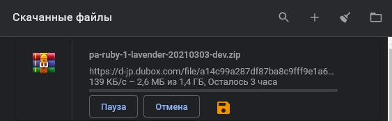

Почему не стоит использовать TeraBox.
Год назад на просторах интернета я нашел облачное хранилище Dubox. Там мне дали 1ТБ бессрочного хранения. Ради интереса загрузил туда файлов, которые нужны раз в полгода и забил. Месяц назад заметил, что они решили переименоваться. Ну переименовываются и переименовываются и ладно.
Но недели 2 назад стал замечать рекламу этого самого TeraBox на YouTube. Вот я и решил написать эту статейку.
1. А не видит ли Ксуекин Цзян* мои файлы?
Сами подумайте, почему Google или любая другая компания, предоставляющая услуги облачного хранилища не даст такое же объем хранилища? Ведь это не только невыгодно, а просто потому что ничего бесплатного не бывает. А единственный способ сделать такой объем бесплатным для всех, продавать кому-то содержимое этого хранилища. Так что, загружать рабочие документы, ваши фото и видео и прочую личную информацию туда не стоит.
2. Низкая скорость загрузки.
Со скоростью загрузки TeraBox, пользоваться им совсем не хочется.
Но недели 2 назад стал замечать рекламу этого самого TeraBox на YouTube. Вот я и решил написать эту статейку.
1. А не видит ли Ксуекин Цзян* мои файлы?
Сами подумайте, почему Google или любая другая компания, предоставляющая услуги облачного хранилища не даст такое же объем хранилища? Ведь это не только невыгодно, а просто потому что ничего бесплатного не бывает. А единственный способ сделать такой объем бесплатным для всех, продавать кому-то содержимое этого хранилища. Так что, загружать рабочие документы, ваши фото и видео и прочую личную информацию туда не стоит.
2. Низкая скорость загрузки.
Со скоростью загрузки TeraBox, пользоваться им совсем не хочется.

Скорость загрузки из облака TeraBox
3. Сложные манипуляции для того чтобы поделиться файлом.
А для того, чтобы поделиться вашими файлами, вам нужно не только скинуть ссылку за скачивание, так еще и код доступа к файлу. Но и это еще не все. Тому, кто перейдет по ссылке, нужно еще будет зарегистрироваться в TeraBox. Указать почту, пароль (возможно еще что-то я не помню уже.).
Поэтому не рекомендую пользоваться этим сервисом, лучше использовать сервисами от других компаний, а идеальным вариантом будет сделать свое хранилище, обычно за тот же объем выходит куда дешевле, нежели использовать Google Drive и подобные.
А для того, чтобы поделиться вашими файлами, вам нужно не только скинуть ссылку за скачивание, так еще и код доступа к файлу. Но и это еще не все. Тому, кто перейдет по ссылке, нужно еще будет зарегистрироваться в TeraBox. Указать почту, пароль (возможно еще что-то я не помню уже.).
Поэтому не рекомендую пользоваться этим сервисом, лучше использовать сервисами от других компаний, а идеальным вариантом будет сделать свое хранилище, обычно за тот же объем выходит куда дешевле, нежели использовать Google Drive и подобные.